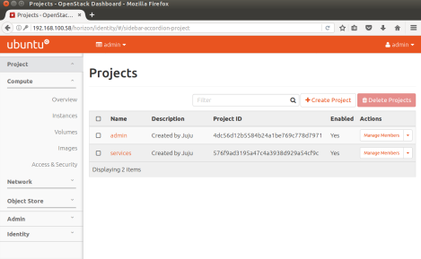

3. Install OpenStack
Now that we’ve installed and configured MAAS and successfully deployed a Juju controller, it’s time to do some real work; use Juju to deploy OpenStack, the leading open cloud platform.
We have two options when installing OpenStack:
- Install and configure each OpenStack component separately. Adding Ceph, Compute, Swift, RabbitMQ, Keystone and Neutron in this way allows you to see exactly what Juju and MAAS are doing, and consequently, gives you a better understanding of the underlying OpenStack deployment.
- Use a bundle to deploy OpenStack with a single command. A bundle is an encapsulation of a working deployment, including all configuration, resources and references. It allows you to effortlessly recreate a deployment with a single command or share that deployment with other Juju users.
If this is your first foray into MAAS, Juju and OpenStack territory, we’d recommend starting with the first option. This will give you a stronger foundation for maintaining and expanding the default deployment. Our instructions for this option continue below.
Alternatively, jump to Deploying OpenStack as a bundle to learn about deploying as a bundle.
3.1. Deploy the Juju controller
Previously, we tested our MAAS and Juju configuration by deploying a new Juju controller called maas-controller. You can check this controller is still operational by typing juju status. With the Juju controller running, the output will look similar to the following:
Model Controller Cloud/Region Version
default maas-controller-two mymaas 2.2.1
App Version Status Scale Charm Store Rev OS Notes
Unit Workload Agent Machine Public address Ports Message
Machine State DNS Inst id Series AZ
If you need to remove and redeploy the controller, use the following two commands:
juju kill-controller maas-controller
juju bootstrap --constraints tags=juju mymaas maas-controller
During the bootstrap process, Juju will create a model called default, as shown in the output from juju status above. Models act as containers for applications, and Juju’s default model is great for experimentation.
We are going to create a new model called uos to hold our OpenStack deployment exclusively, making the entire deployment easier to manage and maintain.
To create a model called uos (and switch to it), simply type the following:
3.2. Deploy OpenStack
We are now going to step through adding the OpenStack components to the new model. The applications will be installed from the eniware-org/eniware-cloud repository. We’ll be providing the configuration for the charms as a yaml file which we include as we deploy it.
The configuration is held in the file called open-stack-2018-02-15.yaml.
Deployment requires no further configuration than running the following command:
juju deploy open-stack-2018-02-15
The deployed yaml file includes the following applications:
- Openstack dashboard - it provides a Django based web interface for use by both administrators and users of an OpenStack Cloud. It allows you to manage Nova, Glance, Cinder and Neutron resources within the cloud.
|
- Keystone - this charm provides Keystone, the OpenStack identity service. Its target platform is (ideally) Ubuntu LTS + OpenStack.
|
- Glance - The Glance project provides an image registration and discovery service and an image delivery service. These services are used in conjunction by Nova to deliver images from object stores, such as OpenStack’s Swift service, to Nova’s compute nodes.
|
- MySQL - Percona XtraDB Cluster is a high availability and high scalability solution for MySQL clustering. Percona XtraDB Cluster integrates Percona Server with the Galera library of MySQL high availability solutions in a single product package which enables you to create a cost-effective MySQL cluster. This charm deploys Percona XtraDB Cluster onto Ubuntu.
|
- Cinder - Cinder is the block storage service for the OpenStack. This charm provides the Cinder volume service for OpenStack. It is intended to be used alongside the other OpenStack components. Cinder is made up of 3 separate services: an API service, a scheduler and a volume service. This charm allows them to be deployed in different combination, depending on user preference and requirements.
|
- Cinder Ceph - This charm provides a Ceph storage backend for Cinder charm. This allows multiple Ceph storage clusters to be associated with a single Cinder deployment, potentially alongside other storage backends from other vendors.
|
- RabbitMQ - RabbitMQ is an implementation of AMQP, the emerging standard for high performance enterprise messaging. The RabbitMQ server is a robust and scalable implementation of an AMQP broker. This charm deploys RabbitMQ server and provides AMQP connectivity to clients.
|
- Nova Compute - this charm is a cloud computing fabric controller which provides the OpenStack compute service. This charm provides the Nova Compute hypervisor service and should be deployed directly to physical servers. Its target platform is Ubuntu (preferably LTS) + OpenStack.
|
- Ceph OSD - Ceph is a distributed storage and network file system designed to provide excellent performance, reliability, and scalability. This charm deploys additional Ceph OSD storage service units and should be used in conjunction with the Ceph-mon charm to scale out the amount of storage available in a Ceph cluster.
|
- Ceph Mon - This charm deploys a Ceph monitor cluster.
|
- Ceph Radosgw - This charm provides the RADOS HTTP gateway supporting S3 and Swift protocols for object storage.
|
- Neutron API - Neutron is a virtual network service for OpenStack. Neutron provides an API to dynamically request and configure virtual networks. These networks connect “interfaces” from other OpenStack services (e.g., virtual NICs from Nova VMs). The Neutron API supports extensions to provide advanced network capabilities (e.g., QoS, ACLs, network monitoring, etc.). This principle charm provides the OpenStack Neutron API service which was previously provided by the Nova-cloud-controller charm. When this charm is related to the Nova-cloud-controller charm the Nova-cloud controller charm will shutdown its api service, de-register it from Keystone and inform the compute nodes of the new Neutron url.
|
- Nova Cloud Controller - OpenStack Compute, codenamed Nova, is a cloud computing fabric controller. This charm provides the cloud controller service for OpenStack Nova and includes nova-scheduler, nova-api and nova-conductor services.
|
- Neutron OpenvSwitch - This charm provides the OpenStack Neutron Open vSwitch agent, managing L2 connectivity on nova-compute services. This subordinate charm provides the Neutron OpenvSwitch configuration for a compute node. Once deployed it takes over the management of the Neutron base and plugin configuration on the compute node.
|
- Neutron Gateway - This charm provides central Neutron networking services as part of a Neutron based OpenStack deployment.
|
- NTP - NTP, the Network Time Protocol, provides network based time services to ensure synchronization of time across computers. This charm can be deployed alongside principal charms to enable NTP management across deployed services.
|
Note
Remember, you can check on the status of a deployment using the juju status command. To see the status of a single charm of application, append the charm name. For example, for a Ceph OSD charm:
3.3. Test OpenStack
After everything has deployed and the output of juju status settles, you can check to make sure OpenStack is working by logging into the Horizon dashboard.
The quickest way to get the IP address for the dashboard is with the following command:
juju status --format=yaml openstack-dashboard | grep public-address | awk '{print $2}'
The URL will be http://<IP ADDRESS>/horizon. When you enter this into your browser you can login with admin and openstack, unless you changed the password in the configuration file.
If everything works, you will see something similar to the following:

3.4. Next steps
Congratulations, you’ve successfully deployed a working OpenStack environment using both Juju and MAAS. The next step is to configure OpenStack for use within a production environment.